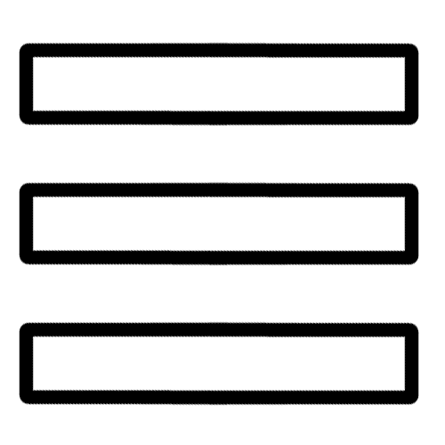

  <!-- The overlay -->
<div id="myNav" class="overlay">

  <!-- Button to close the overlay navigation -->
  <a href="javascript:void(0)" class="closebtn" onclick="closeNav()">&times;</a>

    
<div class="overlayBG"></div>
    
  <!-- Overlay content -->
  <div class="overlay-content">
    <div class="home-links" id="overlay-nav">
<!--        <h4><a class="home-link" href="index.html#welcome" id="home-nav" onclick="closeNav()">Home</a></h4>-->
        <h4><a class="hp-story" href="story.html" onclick="closeNav()">My Story ></a></h4>
        <h4><a class="hp-cv" href="cv.html" onclick="closeNav()">Resumé ></a></h4>
        <h4><a class="hp-philosophy" href="philosophy.html" onclick="closeNav()">Design Philosophy ></a></h4>
        <h4><a class="hp-portfolio" href="index.html#TrendGraphix" onclick="closeNav()">Portfolio ></a></h4>
        <h4><a class="hp-testimonials" href="index.html#Testimonials" onclick="closeNav()">Testimonials ></a></h4>
        <h4><a class="hp-contact" href="index.html#Contact" onclick="closeNav()">Contact ></a></h4>
      </div> 
          
<!--       <div><a class="home-link" href="credits.html" id="credits">Credits</a></div>
 -->        
  
</div>
    
<p class="overlay-copyright">Copyright &copy; <i>Nuanced Design</i> 2010-2021 All Rights Reserved.</p>
  
</div>

<!--   -->
<!-- Trigger/Open The Main Nav Overlay -->
  <button class="chatIcon fade-in" onclick="openNav()" id="menu-icon"></button>
